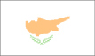
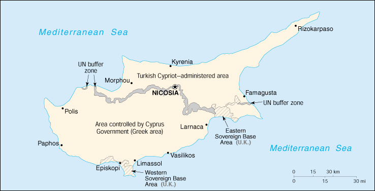

{kind=link}


| Cyprus |  |
|
|  | |
| Introduction |
Background: Independence from the UK was approved in 1960 with constitutional guarantees by the Greek Cypriot majority to the Turkish Cypriot minority. In 1974 a Greek-sponsored attempt to seize the government was met by military intervention from Turkey, which soon controlled almost 40% of the island. In 1983 the Turkish-held area declared itself the Turkish Republic of Northern Cyprus, but it is recognized only by Turkey. Cyprus talks resumed in December 1999 to prepare the ground for a comprehensive settlement.
| Geography |
Location: Middle East, island in the Mediterranean Sea, south of Turkey
Geographic coordinates: 35 00 N, 33 00 E
Map references: Middle East
Area:
total:
9,250 sq km (of which 3,355 sq km are in the Turkish Cypriot area)
land:
9,240 sq km
water:
10 sq km
Area - comparative: about 0.6 times the size of Connecticut
Land boundaries: 0 km
Coastline: 648 km
Maritime claims:
continental shelf:
200-m depth or to the depth of exploitation
territorial sea:
12 nm
Climate: temperate, Mediterranean with hot, dry summers and cool, winters
Terrain: central plain with mountains to north and south; scattered but significant plains along southern coast
Elevation extremes:
lowest point:
Mediterranean Sea 0 m
highest point:
Olympus 1,951 m
Natural resources: copper, pyrites, asbestos, gypsum, timber, salt, marble, clay earth pigment
Land use:
arable land:
12%
permanent crops:
5%
permanent pastures:
0%
forests and woodland:
13%
other:
70% (1993 est.)
Irrigated land: 390 sq km (1993 est.)
Natural hazards: moderate earthquake activity
Environment - current issues: water resource problems (no natural reservoir catchments, seasonal disparity in rainfall, sea water intrusion to island's largest aquifer, increased salination in the north); water pollution from sewage and industrial wastes; coastal degradation; loss of wildlife habitats from urbanization
Environment - international agreements:
party to:
Air Pollution, Biodiversity, Climate Change, Climate Change-Kyoto Protocol, Endangered Species, Environmental Modification, Hazardous Wastes, Law of the Sea, Marine Dumping, Nuclear Test Ban, Ozone Layer Protection, Ship Pollution
signed, but not ratified:
Air Pollution-Persistent Organic Pollutants
| People |
Population: 758,363 (July 2000 est.)
Age structure:
0-14 years:
23% (male 91,075; female 86,832)
15-64 years:
66% (male 252,252; female 247,464)
65 years and over:
11% (male 35,149; female 45,591) (2000 est.)
Population growth rate: 0.6% (2000 est.)
Birth rate: 13.27 births/1,000 population (2000 est.)
Death rate: 7.68 deaths/1,000 population (2000 est.)
Net migration rate: 0.44 migrant(s)/1,000 population (2000 est.)
Sex ratio:
at birth:
1.05 male(s)/female
under 15 years:
1.05 male(s)/female
15-64 years:
1.02 male(s)/female
65 years and over:
0.77 male(s)/female
total population:
1 male(s)/female (2000 est.)
Infant mortality rate: 8.07 deaths/1,000 live births (2000 est.)
Life expectancy at birth:
total population:
76.71 years
male:
74.43 years
female:
79.1 years (2000 est.)
Total fertility rate: 1.95 children born/woman (2000 est.)
Nationality:
noun:
Cypriot(s)
adjective:
Cypriot
Ethnic groups: Greek 78% (99.5% of the Greeks live in the Greek Cypriot area; 0.5% of the Greeks live in the Turkish Cypriot area), Turkish 18% (1.3% of the Turks live in the Greek Cypriot area; 98.7% of the Turks live in the Turkish Cypriot area), other 4% (99.2% of the other ethnic groups live in the Greek Cypriot area; 0.8% of the other ethnic groups live in the Turkish Cypriot area)
Religions: Greek Orthodox 78%, Muslim 18%, Maronite, Armenian Apostolic, and other 4%
Languages: Greek, Turkish, English
Literacy:
definition:
age 15 and over can read and write
total population:
94%
male:
98%
female:
91% (1987 est.)
| Government |
Country name:
conventional long form:
Republic of Cyprus
conventional short form:
Cyprus
note:
the Turkish Cypriot area refers to itself as the "Turkish Republic of Northern Cyprus" (TRNC)
Data code: CY
Government type:
republic
note:
a disaggregation of the two ethnic communities inhabiting the island began after the outbreak of communal strife in 1963; this separation was further solidified following the Turkish intervention in July 1974 following a Greek junta-based coup attempt, which gave the Turkish Cypriots de facto control in the north; Greek Cypriots control the only internationally recognized government; on 15 November 1983 Turkish Cypriot "President" Rauf DENKTASH declared independence and the formation of a "Turkish Republic of Northern Cyprus" (TRNC), which has been recognized only by Turkey; both sides publicly call for the resolution of intercommunal differences and creation of a new federal system (Greek Cypriot position) or confederate system (Turkish Cypriot position) of government
Capital:
Nicosia
note:
the Turkish Cypriot area's capital is Lefkosa (Nicosia)
Administrative divisions: 6 districts; Famagusta, Kyrenia, Larnaca, Limassol, Nicosia, Paphos; note - Turkish Cypriot area's administrative divisions include Kyrenia, all but a small part of Famagusta, and small parts of Lefkosa (Nicosia) and Larnaca
Independence:
16 August 1960 (from UK)
note:
Turkish Cypriot area proclaimed self-rule on 13 February 1975 from Republic of Cyprus
National holiday: Independence Day, 1 October; note - Turkish Cypriot area celebrates 15 November as Independence Day
Constitution: 16 August 1960; negotiations to create the basis for a new or revised constitution to govern the island and to better relations between Greek and Turkish Cypriots have been held intermittently; in 1975 Turkish Cypriots created their own constitution and governing bodies within the "Turkish Federated State of Cyprus," which was renamed the "Turkish Republic of Northern Cyprus" in 1983; a new constitution for the Turkish Cypriot area passed by referendum on 5 May 1985
Legal system: based on common law, with civil law modifications
Suffrage: 18 years of age; universal
Executive branch:
chief of state:
President Glafcos CLERIDES (since 28 February 1993); note - the president is both the chief of state and head of government; post of vice president is currently vacant; under the 1960 constitution, the post is reserved for a Turkish Cypriot
head of government:
President Glafcos CLERIDES (since 28 February 1993); note - the president is both the chief of state and head of government; post of vice president is currently vacant; under the 1960 constitution, the post is reserved for a Turkish Cypriot
cabinet:
Council of Ministers appointed jointly by the president and vice president
elections:
president elected by popular vote for a five-year term; election last held 15 February 1998 (next to be held NA February 2003)
election results:
Glafcos CLERIDES reelected president; percent of vote - Glafcos CLERIDES 50.8%, George IAKOVOU 49.2%
note:
Rauf R. DENKTASH has been "president" of the Turkish Cypriot area since 13 February 1975 ("president" elected by popular vote for a five-year term); elections last held 15 and 22 April 1995 (next to be held NA April 2000); results - Rauf R. DENKTASH reelected president; pecent of vote - Rauf R. DENKTASH 62.5%, Dervis EROGLU 37.5%; Dervis EROGLU has been "prime minister" of the Turkish Cypriot area since 16 August 1996; there is a Council of Ministers (cabinet) in the Turkish Cypriot area
Legislative branch:
unicameral - Greek Cypriot area: House of Representatives or Vouli Antiprosopon (80 seats; 56 assigned to the Greek Cypriots, 24 to Turkish Cypriots; note - only those assigned to Greek Cypriots are filled; members are elected by popular vote to serve five-year terms); Turkish Cypriot area: Assembly of the Republic or Cumhuriyet Meclisi (50 seats; members are elected by popular vote to serve five-year terms)
elections:
Greek Cypriot area: last held 26 May 1996 (next to be held May 2001); Turkish Cypriot area: last held 6 December 1998 (next to be held December 2003)
election results:
Greek Cypriot area: House of Representatives - percent of vote by party - DISY 34.5%, AKEL (Communist) 33.0%, DIKO 16.4%, EDEK 8.1%, KED 3.7%, others 4.3%; seats by party - DISY 20, AKEL (Communist) 19, DIKO 10, EDEK 5, KED 2; Turkish Cypriot area: Assembly of the Republic - percent of vote by party - UBP 40.3%, DP 22.6%, TKP 15.4%, CTP 13.4%, UDP 4.6%, YBH 2.5%, BP 1.2%; seats by party - UBP 24, DP 13, TKP 7, CTP 6
Judicial branch:
Supreme Court, judges are appointed by the Supreme Council of Judicature
note:
there is also a Supreme Court in the Turkish Cypriot area
Political parties and leaders: Greek Cypriot area: Democratic Party or DIKO [Spyros KYPRIANOU]; Democratic Rally or DISY [Nikos ANASTASIADHIS]; Ecologists [Yeoryios PERDHIKIS]; New Horizons [Nikolaos KOUTSOU, secretary general]; Restorative Party of the Working People or AKEL (Communist Party) [Dimitrios CHRISTOFIAS]; United Democratic Union of Cyprus or EDEK [Vassos LYSSARIDIS]; United Democrats Movement or EDI (formerly Free Democrats Movement or KED) [George VASSILIOU]; Turkish Cypriot area: Communal Liberation Party or TKP [Mustafa AKINCI]; Democratic Party or DP [Serdar DENKTASH]; National Birth Party or UDP [Enver EMIN]; National Unity Party or UBP [Dervis EROGLU]; Our Party or BP [Okyay SADIKOGLU]; Patriotic Unity Movement or YBH [Ozker OZGUR]; Republican Turkish Party or CTP [Mehmet ALI TALAT]
Political pressure groups and leaders: Confederation of Cypriot Workers or SEK (pro-West); Confederation of Revolutionary Labor Unions or Dev-Is; Federation of Turkish Cypriot Labor Unions or Turk-Sen; Pan-Cyprian Labor Federation or PEO (Communist controlled)
International organization participation: C, CCC, CE, EBRD, ECE, EU (applicant), FAO, G-77, IAEA, IBRD, ICAO, ICC, ICFTU, IDA, IFAD, IFC, IFRCS (associate), IHO, ILO, IMF, IMO, Inmarsat, Intelsat, Interpol, IOC, IOM, ISO, ITU, NAM, OAS (observer), OPCW, OSCE, PCA, UN, UNCTAD, UNESCO, UNIDO, UPU, WCL, WFTU, WHO, WIPO, WMO, WToO, WTrO
Diplomatic representation in the US:
chief of mission:
Ambassador Erato KOZAKOU-MARCOULLIS
chancery:
2211 R Street NW, Washington, DC 20008
telephone:
[1] (202) 462-5772
FAX:
[1] (202) 483-6710
consulate(s) general:
New York
note:
representative of the Turkish Cypriot area in the US is Ahmet ERDENGIZ; office at 1667 K Street NW, Washington, DC; telephone [1] (202) 887-6198
Diplomatic representation from the US:
chief of mission:
Ambassador Donald K. BANDLER
embassy:
corner of Metochiou and Ploutarchou Streets, Engomi, Nicosia
mailing address:
P. O. Box 4536, FPO AE 09836
telephone:
[357] (2) 776400
FAX:
[357] (2) 780944
Flag description:
white with a copper-colored silhouette of the island (the name Cyprus is derived from the Greek word for copper) above two green crossed olive branches in the center of the flag; the branches symbolize the hope for peace and reconciliation between the Greek and Turkish communities
note:
the Turkish Cypriot flag has a horizontal red stripe at the top and bottom between which is a red crescent and red star on a white field
| Economy |
Economy - overview: Economic affairs are dominated by the division of the country into the southern (Greek) area controlled by the Cyprus Government and the northern Turkish Cypriot-administered area. The Greek Cypriot economy is prosperous but highly susceptible to external shocks. Erratic growth rates in the 1990s reflect the economy's vulnerability to swings in tourist arrivals, caused by political instability on the island and fluctuations in economic conditions in Western Europe. Economic policy in the south is focused on meeting the criteria for admission to the EU. As in the Turkish sector, water shortage is a growing problem, and several desalination plants are planned. The Turkish Cypriot economy has about one-fifth the population and one-third the per capita GDP of the south. Because it is recognized only by Turkey, it has had much difficulty arranging foreign financing, and foreign firms have hesitated to invest there. The economy remains heavily dependent on agriculture and government service, which together employ about half of the work force. Moreover, the small, vulnerable economy has suffered because the Turkish lira is legal tender. To compensate for the economy's weakness, Turkey provides direct and indirect aid to tourism, education, industry, etc.
GDP: Greek Cypriot area: purchasing power parity - $9 billion; Turkish Cypriot area: purchasing power parity - $820 million (1998 est.)
GDP - real growth rate: Greek Cypriot area: 3.0%; Turkish Cypriot area: 5.3% (1998 est.)
GDP - per capita: Greek Cypriot area: purchasing power parity - $15,400; Turkish Cypriot area: purchasing power parity - $5,000 (1998 est.)
GDP - composition by sector: Greek Cypriot area: agriculture 6.3%, industry 22.4%, services 71.3%; Turkish Cypriot area: agriculture 11.8%, industry 20.5%, services 67.7% (1998)
Population below poverty line: NA%
Household income or consumption by percentage share:
lowest 10%:
NA%
highest 10%:
NA%
Inflation rate (consumer prices): Greek Cypriot area: 2.3% (1998 est.); Turkish Cypriot area: 66% (1998 est.)
Labor force: Greek Cypriot area: 289,400; Turkish Cypriot area: 80,200 (1998)
Labor force - by occupation: Greek Cypriot area: services 66.6%, industry 23.2%, agriculture 10.2% (1998); Turkish Cypriot area: services 55.4%, industry 21.6%, agriculture 23% (1997)
Unemployment rate: Greek Cypriot area: 3.3% (1998 est.); Turkish Cypriot area: 6.4% (1997)
Budget:
revenues:
Greek Cypriot area - $2.9 billion (1998); Turkish Cypriot area - $171 million (1997 est.)
expenditures:
Greek Cypriot area - $3.4 billion, including capital expenditures of $345 million (1998); Turkish Cypriot area - $306 million, including capital expenditures of $56.8 million (1997 est.)
Industries: food, beverages, textiles, chemicals, metal products, tourism, wood products
Industrial production growth rate: Greek Cypriot area: 2.4% (1998); Turkish Cypriot area: 5.1% (1997)
Electricity - production: Greek Cypriot area: 2.675 billion kWh; Turkish Cypriot area: NA kWh (1998)
Electricity - production by source:
fossil fuel:
100%
hydro:
0%
nuclear:
0%
other:
0% (1998)
Electricity - consumption: Greek Cypriot area: 2.488 billion kWh; Turkish Cypriot area: NA kWh (1998)
Electricity - exports: 0 kWh (1998)
Electricity - imports: 0 kWh (1998)
Agriculture - products: potatoes, citrus, vegetables, barley, grapes, olives, vegetables
Exports: Greek Cypriot area: $1.1 billion (f.o.b., 1998 est.); Turkish Cypriot area: $63.9 million (f.o.b., 1998)
Exports - commodities: Greek Cypriot area: citrus, potatoes, grapes, wine, cement, clothing and shoes; Turkish Cypriot area: citrus, potatoes, textiles (1998)
Exports - partners: Greek Cypriot area: UK 14.5%, Russia 14.5%, Greece 9.8%, Lebanon 5.5%, UAE 4.9%; Turkish Cypriot area: Turkey 47%, UK 26%, other EU 15% (1998)
Imports: Greek Cypriot area: $3.5 billion (f.o.b., 1998 est.); Turkish Cypriot area: $374 million (f.o.b., 1997)
Imports - commodities: Greek Cypriot area: consumer goods, petroleum and lubricants, food and feed grains, machinery (1998); Turkish Cypriot area: food, minerals, chemicals, machinery (1997)
Imports - partners: Greek Cypriot area: US 12.5%, UK 11.3%, Italy 9.4%, Germany 8.5%, Greece 8.2% (1998); Turkish Cypriot area: Turkey 56.4%, UK 13.5%, other EU 12.2% (1997)
Debt - external: Greek Cypriot area: $1.27 billion; Turkish Cypriot area: $NA (1998)
Economic aid - recipient: Greek Cypriot area - $17 million (1998); Turkish Cypriot area - $700 million from Turkey in grants and loans (1990-97) that are usually forgiven
Currency: Greek Cypriot area: 1 Cypriot pound = 100 cents; Turkish Cypriot area: 1 Turkish lira (TL) = 100 kurus
Exchange rates: Cypriot pounds per US$1 - 0.5688 (January 2000), 0.5423 (1999), 0.5170 (1998), 0.5135 (1997), 0.4663 (1996), 0.4522 (1995); Turkish liras (TL) per US$1 - 545,584 (January 2000), 418,783 (1999), 260,724 (1998), 151,865 (1997), 81,405 (1996), 45,845.1 (1995)
Fiscal year: calendar year
| Communications |
Telephones - main lines in use: Greek Cypriot area: 405,000 (1998); Turkish Cypriot area: 70,845 (1996)
Telephones - mobile cellular: Greek Cypriot area: 68,000 (1998); Turkish Cypriot area: 70,000 (1999)
Telephone system:
excellent in both the Greek Cypriot and Turkish Cypriot areas
domestic:
open wire, fiber-optic cable, and microwave radio relay
international:
tropospheric scatter; 3 coaxial and 5 fiber-optic submarine cables; satellite earth stations - 3 Intelsat (1 Atlantic Ocean and 2 Indian Ocean), 2 Eutelsat, 2 Intersputnik, and 1 Arabsat
Radio broadcast stations: Greek Cypriot area: AM 7, FM 60, shortwave 1 (1998); Turkish Cypriot area: AM 3, FM 11, shortwave 1 (1998)
Radios: Greek Cypriot area: 310,000 (1997); Turkish Cypriot area: 56,450 (1994)
Television broadcast stations: Greek Cypriot area: 4 plus 225 low-power repeaters; Turkish Cypriot area: 4 plus 5 repeaters (September 1995)
Televisions: Greek Cypriot area: 248,000 (1997); Turkish Cypriot area: 52,300 (1994)
Internet Service Providers (ISPs): 5 (1999)
| Transportation |
Railways: 0 km
Highways:
total:
Greek Cypriot area: 10,663 km (1998 est.); Turkish Cypriot area: 2,350 km (1996 est.)
paved:
Greek Cypriot area: 6,249 km (1998 est.); Turkish Cypriot area: 1,370 km (1996 est.)
unpaved:
Greek Cypriot area: 4,414 km (1998 est.); Turkish Cypriot area: 980 km (1996 est.)
Ports and harbors: Famagusta, Kyrenia, Larnaca, Limassol, Paphos, Vasilikos
Merchant marine:
total:
1,414 ships (1,000 GRT or over) totaling 23,497,776 GRT/37,331,506 DWT
ships by type:
barge carrier 2, bulk 442, cargo 495, chemical tanker 22, combination bulk 40, combination ore/oil 8, container 144, liquified gas 6, passenger 8, petroleum tanker 142, refrigerated cargo 41, roll-on/roll-off 45, short-sea passenger 13, specialized tanker 4, vehicle carrier 2 (1999 est.)
note:
a flag of convenience registry; includes ships from 37 countries among which are Greece 611, Germany 129, Russia 49, Latvia 278, Netherlands 20, Japan 28, Cuba 16, China 15, Hong Kong 13, and Poland 15 (1998 est.)
Airports: 15 (1999 est.)
Airports - with paved runways:
total:
12
2,438 to 3,047 m:
7
1,524 to 2,437 m:
1
914 to 1,523 m:
3
under 914 m:
1 (1999 est.)
Airports - with unpaved runways:
total:
3
914 to 1,523 m:
1
under 914 m:
2 (1999 est.)
Heliports: 6 (1999 est.)
| Military |
Military branches: Greek Cypriot area: Greek Cypriot National Guard (GCNG; includes air and naval elements), Hellenic Forces Regiment on Cyprus (ELDYK), Greek Cypriot Police; Turkish Cypriot area: Turkish Cypriot Security Force (TCSF), Turkish mainland army units
Military manpower - military age: 18 years of age
Military manpower - availability:
males age 15-49:
196,317 (2000 est.)
Military manpower - fit for military service:
males age 15-49:
134,865 (2000 est.)
Military manpower - reaching military age annually:
males:
6,541 (2000 est.)
Military expenditures - dollar figure: $320 million (FY99)
Military expenditures - percent of GDP: 5% (FY99)
| Transnational Issues |
Disputes - international: 1974 hostilities divided the island into two de facto autonomous areas, a Greek Cypriot area controlled by the internationally recognized Cypriot Government (59% of the island's land area) and a Turkish-Cypriot area (37% of the island), that are separated by a UN buffer zone (4% of the island); there are two UK sovereign base areas mostly within the Greek Cypriot portion of the island
Illicit drugs: minor transit point for heroin and hashish via air routes and container traffic to Europe, especially from Lebanon and Turkey; some cocaine transits as well